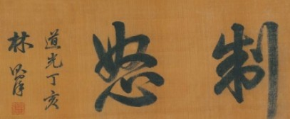

Related pictures
-

- 

Lin zexu loves poetry and calligraphy in his life. he has written such works as "Wen Chao of yunzuo mountain house", "Shi Chao of yunzuo mountain house", "making Dian sing grass" and "Lin wenzhong's government book" and "he ge Ji cheng". The manuscripts, diaries, official correspondence, letters, poems, etc. left after the founding of the People's Republic of China are compiled as "Lin Zexu Collection".
Lin zexu's works include memorials, official correspondence, literary notes, poems, letters, diaries and his translation of "the chronicles of the four continents". These books and translations are scattered throughout Tibet and have not been systematically sorted out for a long time.
the complete works of Lin zexu are divided into six volumes, including ten volumes, including memorials, poems, letters, diaries and translations.
Calligraphy works
the main achievement of Lin zexu's calligraphy is cursive, and based on the preface to the holy teachings of the king, Lin zexu belongs to a traditional faction, and the beauty of the whole calligraphy is its value. At the same time, Lin's regular script works also show his ability to face the challenge.
Lin Shi said in 1827 (the 7th year of Daoguang's reign) postscript to Shen yizhai's ink: "when a beginner imitates a Tang dynasty, it is equal to zhong Zhang Xi's sacrifice. it is still impossible for him to stand up and make him gallop, so he must lie still." It can be seen that Lin has his own experience in learning books, starting with the Tang Dynasty is his idea. As a matter of fact, Lin did not ignore the traditional consensus of "learning from the law is superior". His regular script is not rigidly bound to a certain framework, nor is it purely a rule of the Tang Dynasty. He also occasionally reveals Jin people's demeanor between strokes, the more so in his later works.
Lin's calligraphy is powerful, serene and free from affectation. although it does not belong to the way of strength and strength, its words reflect the inherent integrity and awe-inspiring righteousness of the Chinese nation.